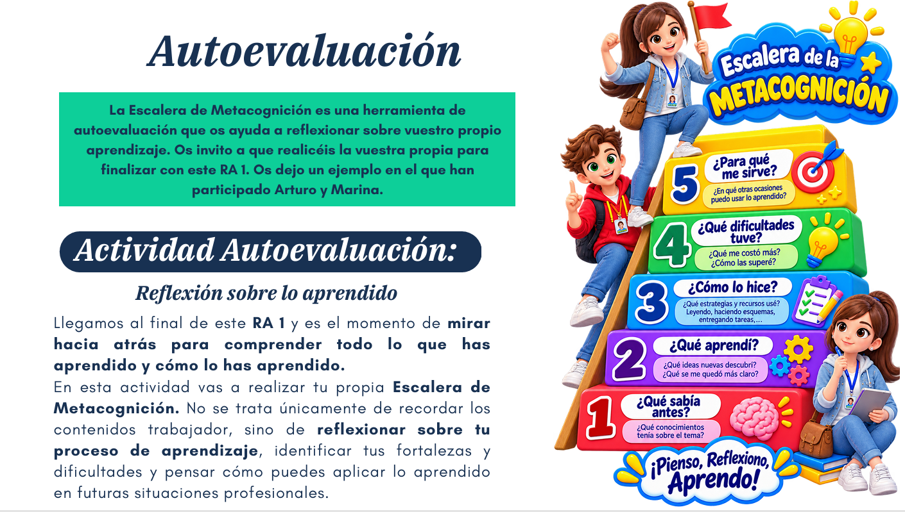
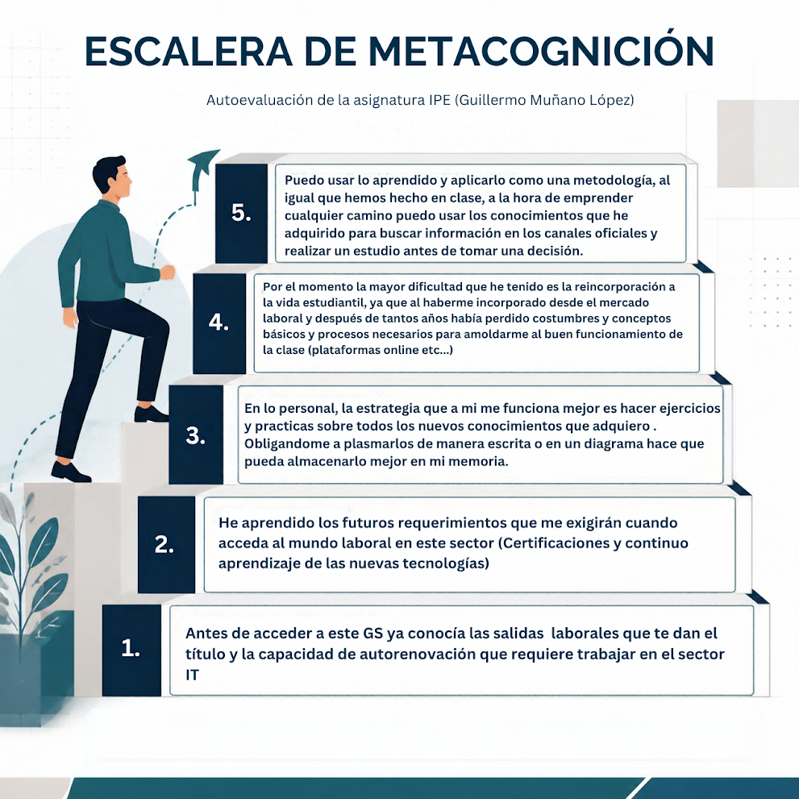

Autoevaluación · RA 1 · IPE Unidad 01
Actividad 5 · Escalera de Metacognición
Reflexión personal sobre el proceso de aprendizaje al finalizar el RA 1.
← Volver a IPE¿Qué es la Escalera de Metacognición?
Es una herramienta de autoevaluación que ayuda a reflexionar sobre el propio aprendizaje. No se trata solo de recordar contenidos, sino de pensar sobre el proceso: qué aprendí, cómo lo hice, qué dificultades tuve y para qué me sirve lo aprendido.
Mi reflexión
¿Qué sabía antes?
Antes de acceder a este Grado Superior ya conocía las salidas laborales que da el título y la capacidad de autorrenovación que requiere trabajar en el sector IT.
¿Qué aprendí?
He aprendido los futuros requerimientos que me exigirán cuando acceda al mundo laboral: certificaciones y aprendizaje continuo de las nuevas tecnologías.
¿Cómo lo hice?
Mi estrategia es hacer ejercicios y prácticas sobre todos los nuevos conocimientos que adquiero. Obligarme a plasmarlos de forma escrita o en un diagrama hace que pueda almacenarlos mejor en mi memoria.
¿Qué dificultades tuve?
La mayor dificultad ha sido la reincorporación a la vida estudiantil, ya que al haberme incorporado desde el mercado laboral había perdido costumbres y conceptos básicos necesarios para amoldarme al funcionamiento de la clase (plataformas online, etc.).
¿Para qué me sirve?
Puedo usar lo aprendido y aplicarlo como metodología: a la hora de emprender cualquier camino, puedo usar los conocimientos adquiridos para buscar información en canales oficiales y realizar un estudio antes de tomar una decisión.
Infografía de la escalera

Autoevaluación final
